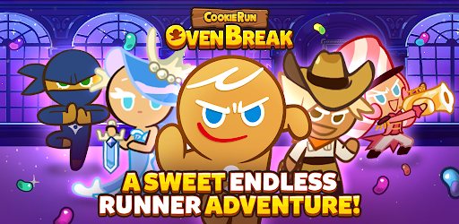

Cookie Run: Oven Break

Cookie Run is a franchise of a side-scrolling running game by Devsisters for iOS and Android
Here's some feature of Cookie Run: Oven Break:
- Cookie Trials - Prove your mastery with specific Cookies
- Trophy Race - Compete with players around the world in real-time
- Breakout - Team up with the Cookies and run in Breakout
- Champion League - Run for the Champion's title
- Island Of Memories - Unravel the hidden pasts of the Cookies
- Friendly Run - Unravel the hidden pasts of the Cookies